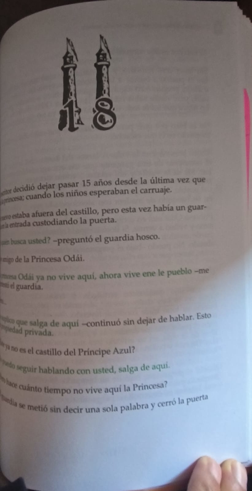

"Año de la Mujer Indígena"
Y COLORIN COLORADO ESTE CUENTO AUN NO SE AH ACABADO
La vida no se acaba hasta que se acaba
ODIN DUPEYRON
El autor de Y Colorin Colorado Este Cuento Aun no se ha Acabado nacio en la Ciudad de Mexico en 1970. Artista innato y multifacetico,
es escritor,productor,actyor y director de teatro.Ha escrito television y varias obras de teatro, entre las cuales destacan Lucas,Espiritus
y Lo que se esconde detras del espejo.Desde hace mas de diez años con su monologo ¡A Vivir!, y mas de cinco con su obra de teatro Veintidos
Veintidos, ha conquistado los escenarios de la Ciudad de Mexico y de toda la Republica Mexicana.

Capitulo 1
Era una noche muy fria, tal vez la mas fria de todas las noches. La princesa Odai como todas las noches miraba por la ventana en espera de
una señal, la princesa era custodiada por el Dragon negro del miedo, mismo al cual enfrenta junto con el escritor, para salir de la torre.

Como en la caso de la princesa Odai, yo piensoq ue muchas veces nosotros mismo nos encerramos y nos ponemos un candado en una puerta
que siempre ha estado habierta pues nuestro miedo sabe que nunca seriamos capaces de abrirla, y asi como ella , no debemos esperar una señal
para tomar accion en nuestra vida, porque la vida siempre puede ser dificil pero no por so tienes que encerrate, y por que la vida a veces duele,
pero ese dolor, es lo que comprueba que estamos vivos
.jpg)
Capitulo 4
El castilllo, una vez que salieron la princesa y el Drangon negro del miedo desaparecio por completo, a la princesa la rodeo un sentimiento de miedo
y ansiedad es justo cuanod aparecio el celador bonsai, aquel que tiene los pergaminos de la vida, el cual dijo que el miedo existe debido a la ignorancia.

Muchas veces salir de nuestra zona de confort puede asustarnos y muvhas vces por mas quetomemos la rienda de nuestras vidas aun existen las leyes
de la vida mismas que pueden poner limites que nunca sabremos a los sucesos de la vida, hay cosas que simplemente estan escritas pero hay muchas
caminos hacia ellas, muchas formas de vivirlas, la vida asi mismo como necesita el miedo, necesita la curiosisdad y el deseo es por eso mismo es
que necesitamos escuchar a nuestra dragon negro del miedo, mismo que siempe esta con nosotros pero no debemos dejarnos privar por el mismo, es por
eso que debemos dejar que la curiosidad y el deseo tambien camine a nuestro lado sin dejarnos absorver por la misma.
Capitulo 5
En este capitulo el Dragon negro del miedo le salvo la vida a la princesa Odai de caer en el Cañon del Viento.Cuando la princesa Odai habia caido en
desesperacion y le dijo que ha estado ahi desde que el mundo es mundo y que dejara las cosas simples por que ella no es nada ante el universo, asi mismo,
le dijoque dejara de complicar su corta vida de angustias y miedos.

El cañon del viento le hace saber a la princesa Odai que si bien ella controla a su mundo, no controla al mundo, muchas veces nos llenamos de miedos,
nos llenamos de miedos y angustias que no hace mas que trabar nuestra llegada a nuestro destino, , nos muestra que no debemos temerle al futuro, el
fututro es algo que viviremos en un segundo, algo que hace dos segundos pensabas, esta un segundo adelante del presente y el pasado esta un segundo atras,
ni siquiera es mañana, es hoy en unos segundos, tu presente al mismo tiendo es tu futuro, no tiene caso temerle a lo que te sucedera, es mejor pensar en
como hacer que lo que quieras que te suceda es lo que quieras que te suceda y muchas veces el futuro, el presente y el pasado es maravilloso, tanto como
puede ser cruel, pero sufrir dolor es lo que nos recuerda que estamos vivos.
Capitulo 7
La princesa Odai y el Dragon negro del miedo vagaban sin rumbo en el bosque se encontraron con un hada con una vasija con comida, misma que le dijo que
es el Hada del recuerdo y que ella cuida La cueva del pasado la cual solo la pueden ver quienes quieren recordar y ella le dijo que muhas veces no somos
lo que somos, muchas veces somos lo que alguna vez fuimos.

Muchas veces asi como nos da miedo el futuro, nos da miedo nuestro pasado, bloqueamos cosas que no quermos recordar, sentimientos que no queremos vivir,
personas que atormentaron nuestro corazon y bloquearon y obscurecieron nuestra mente, el miedo al dolor, al sufrimiento, bloquea muchas vecss incluso
recuerdos de las sonrisas de los que amamos, muchas veces el avanzar a un futuro amable con nosotros el dolor puede derrumbarnos, encerrarnos en nuestra
propia torre del miedo, pero cuando n importa cuantas veces tratemos de avanzar y seguimos sintiendo el mismo dolor es porque nos hemos olvidado de
nuestro pasado y eso nos condona a cometer los mismos errores, por eso debemos estar dispuestos a recordar nuestro pasado, para ser mejores en el futuro.
Capitulo 13
Se le encomendo a la Princesa Odai que buscara al hombre mas rico del mundo, el cual estaba mas cerca de lo quem se imaginabang, al llegar vieron
a un hombre en una choza, vestido con arapos, la princesa Odai le pregunto que si conocia al hombre mas rica del mundo, el le dijo que era el, todos lo
miraron con extrañesa pues el les explico que solo se es rico en experiencia.

La vida, la sociedad muchas veces nos enseña que lo unico que importa es el dinero, las propiedades, las apariencias, sin embargo, en esta vida, las
personas,el dinero, todo aquello nos hace sentir ien, es muy improtante no decir que podeos vivir sin ellos, eso es imposible, somos seres sociales,
necesiramos a otros para vivir, pero, la experiencia, los recuerdos, nuestros aprendizajes, eso que alguna vez sentimos, el amor que explotaba
nuestro corazon al ver a otra persona, y el dolor que provoca la traicio de las personas que mas amas, eso es la experiencia, eso es tu riqueza,
tu dolor y tu felicidad son lo que te forman, lo que te hacen ser tu, lo que te hacer ser rico.
Capitulo 14
Despues de escuchar al hombre as rico del mundo, de tener su riqueza y leerla, la princesa Odai entendio que lo mas preciado que tiee en esta vida
es ella misma y dijo"tengo la Luna, el Sol y las estrellas, tengo las nubes, tengo el aire que respiro, tengo un mundo entero en mis manos, tengo mis
ojos y mis piernas , mi boca, mis oidos, mis manos, estoy viva y tengo todas las posibilidades.

Salir de nuestra torre del miedo es lo mejor que nos pude pasar a todos, auqnue duela, aunque llores, auqnue no puedas levantarte de la cama del
dolor que siente tu corazon, auqnue sientas que vivir es lo mas doloroso que puede existir, aunque tus lagrias sean rojas, auqnue te mires al
espejo y no te guste lo que veas, aunque quieras tapar tu cara, tu existencia, ocultarte del mundo, en realidad, lo unico que necesitas para
sentirte un poco mejor, eres tu mism@, solo necesitas estar viva para seguir adelante, por que todos algua vez hemos estado completamnete solos
y rotos, pero todos simpre hemos podido seguir adelante, o eso creemos.

Capitulo 17
Habian pasado ya diez años desde la ultima vez que el escritor vio a la prncesa Odai, ella ya se habia casado, al regresar se encontro con sus
hijos, mientras que ella estaba envuelta en una vida caotica de maternidad, los niños interactuaron con el y le pidieron que cuando terminara
el cuento los dejara leerlo y ellos le dirrian si es un buen escritor o no.

En la vida somos seres sociales, no soy de las personas que piensan que nacimos para reproducirnos y morir, pienso que las emociones que vivimos
en cada etapa de nuestra vida son la razon de nuestra existencia, puede sonar repetitivo, pero creo que el dolor es lo que comprueba qu estamos
vivos, sin el dolor ¿como podriamos comprobar que estamos vivos?el placer sin dolor solo es una fantasia, volviendo al tema principal, las
etapas de nuestra existencia son particularmente curiosas, a esto me refiero cada persona tiene una sensacion diferente en cada etapa, nadie
puede sentir lo mismo incluso si la situacion tiene los mismo factores, ser madre es uno de los mas dificiles, pero esa experiencia proviene
de otra, de amor, proviene de sentirnos amados, de una conexion con otra persona, se trata de un amor que sientes con alguien mas, amor que puede
o no durar para siempre, pero el producto de el, siempre sera eterno, los hijos son cosas irrepetibles, perderlos es un dolor inimaginable, nadie
deberia de pasar por ese dolor, pero criarlos y tener miedo de equivocarse tambien es complicado, saber si haces o no lo correcto puede ser mucho
mas dificil, pero simpre que hagamos lo que nuestro corazón nos dice, podemos disfrutar cada etapa de nuestra vida, con las personas que nos
rodean en ese momento sin importar si estaran toda la vida con nosotros o no, por eso siempre debes abrazar a las personas que amas, porque nunca
sabes cuando ya no estaran a tu lado.
Capitulo 18
El escritor dejo pasar 15 añosy cuando volvio la princesa ya no vivia mas en el castillo, la princesa le dijo que no penso que volveria, que tardo
mucho, que habian pasado muchas cosas y como lucho ella sola contra el sufrimiento de que las cosas no sean cmo antes con el principe azul, el
aprisiono a Odai en su propio miedo ya que le quito sus riquezas, su experiencia.

La vida puede ser un caos andante, el amor puede acabar, no somos ternor y en mi punto de vista solamente amas muy pocas veces, no tiene que ser
amor romantico, el amor existe en muchas formas y se puede demostrar de muchas maneras, en este caso se acabo, hay personas que tiene una forma
de amar un poco posesiva llegando asi a controlar, todas y todos somos capaces de amar, no hay nadie en el universo que no pueda amar pero la
forma de ejecutar este amor en cada persona es sumamente diferente, en este caso el principe escondio a la riqueza de Odai para mantenerla a su
lado, aveces el miedo de perder a una persona nos hace equivicarnos y hacer cosas que no debemos, el le robo su libertad, la volvio a encerrar
para que no se fuera de su lado, pero ,aveces en cuanto mas temes que algo suceda, sucede, el miedo, genera valor, el valor acciones, nunca habra
miedo sin deseo y curiosidad, las personas no pueden vivir en una torre toda su vida, y no debemos permiir tampoco por mas que amemos a alguien
que nos robe nuestra riqueza, como pareja tienes la obligacion de tratar de sanar sus heridas pero esa persona no debe de doblegarte para que el
se sienta bien, simplemente amar tiene muchos factores, pero desde mi punto vista amar si es entregarte completamente sin perder tu escencia.

Capitulo 19
La princesa Odai se sentia vacia y sin rumbo, pues en su riqueza no habia nada, la habia perdido, lam princesa Odai soño una casa asi que se
embarcaron a una aventura hacia la casa que habia soñado alli encontraron a una mujer muy hermosa, una hechizara, cunado llegaron parecia haber dos
personas, pero no era asi, solo estaba ella misma, ella misma hablandose.

La vida puede llevarte a momentos donde sientas que ya no hay mas, que has fracasodo, donde te sientas vacia y sin ganas de vivir, pero no debes
dejarte vecer por esa, siempre es bueno hbalar contigo misma , solo tu sabes el dolro que has sufrido y solo tu puedes entender por que sigues soportando
ese dolor, vivir es complicado y es dificil, puede llevarte muchas veces a un vacio total
Capitulo 20
La princesa Odai habia muerto pero Yeva le dijo que ella sabia que regresaia solo que no sabia cundo, pero ledejo su riqueza al escritor
diciendole:"Cuando uno tiene tan claro el presente casi adivina el futuro. El lazo que nos unio durante tantas paginas me hizo saber que volverias,
no sabia cuando, pero estaba segura que lo harias"

El vivir tu vida te da derecho a morir tu muerte, en la vida nunca sabemos cuano vamos a morir, nisiquiera planeando nuesyro cuicidio, puede
que intentes morir y ni asi puedas, pues la vida seacba hasta que se acaba, en la vida suceden mil y una cosas que esperamos que no sucedieran,
la vida puede atacranos, o no, tal vez no atacarnos pero nosotros lo senti os cpmo un ataque por que nos duele y el dolor lo relacionamos
inmediatamente con algo malo, maas sin embargo, considero que solo nosotros nos atacamos a nosotros mismos, solo nosotros tenemos la habilidad
de dañar nuestros propios sentimientos, nadie mas puede dañarlos, Odai vivio uchas felicidades pero tambien sufrio mucho, aveces la vida causa
en nosotros pequeñas grietas pero esas grietas no debemos dejar que se rompan, hay una costumbre japonesa que cuando algo se agrieta lo arreglan
con oro, presenvando asi la escencia del objeto y aumentand su belleza,
da click aqui
Mis frases favoritas
- No dejes de imaginar nunca todo lo que puedes llegar a ser
- Lo peor que me puede pasar en esta vida, no es lo peor que me puede pasar en esta vida, lo peor que me puede pasar
en esta vida ¡es...nada! y no me voy a sentar aqui para que no me pase nada.
- Si estas viva es porque la vida cree en ti.
- A veces las cosas mas evidentes solo se pueden ver desde la tranquilidad,cuando aquietas tu mente y te relajas
- No siempre somos lo que somos, en ocasiones somos lo que alguna vez fuimos.
- Muchas de las respuestas a nuestras dudas actuales se encuentran en el pasado.Siempre es bueno saber de donde vienes
para saber a donde vas.
- En la vida solo se es verdaderamente rico en... experiencia.
- No puedes tener el control sobre todas las cosas.
- Nada es del todo seguro.La vida se debe vivir desafiando constantemente a lo desconocido, porque la vida no es estatica
va cambiando constantemente
- A veces lo que te protege de lo desconocido, tambien te encierra y te priva de tu libertad.
Actividades
| Parcial |
Nombre de la actividad |
Descripcion |
Evidencia |
Primer Parcial |
Subrayado |
En este tiempo hicimos lectura y subrayado de cada pagina, en mi caso mi libro toma temas filosoficos sobre la vida,
entonces subraye aquellas frases o acontecimientos que concidere importantes en la trama, asi si mismo se generaron
3 preguntas por sesion de lectura relacionadas a tu tema, estas mismas preguntas deberian de estar contestadas. Lo
subrayado se ponia en posticks que pegamos en el libro, tambien se daba un sello de orientacion por sesion. |
|
Segundo Parcial |
Glosario de Google |
Aqui se termino de leer el libro, y de acuerdo al docente asignado se te asigno una tarea, la mia fue un glosario
con formato de busqueda de Google, en el mismo en el que se buscadon mas que palabras desconocidas, se busco
palabras que fuean importantes para la trama o que significaran algo para ti |
|
Tercer Parcial |
Nube de palabras |
En este parcial se recolectaron las palabras mas importantes del libro, aquellas que dejan una marca en tu corazon,
dichas palabras fueron recolectadas entre todos los integrantes de mi salon que tenian el mismo libro, cada palabra
empleada significo algo para nosotros, cambio algo en nosotros. |
|